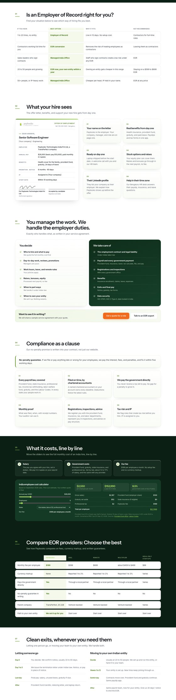
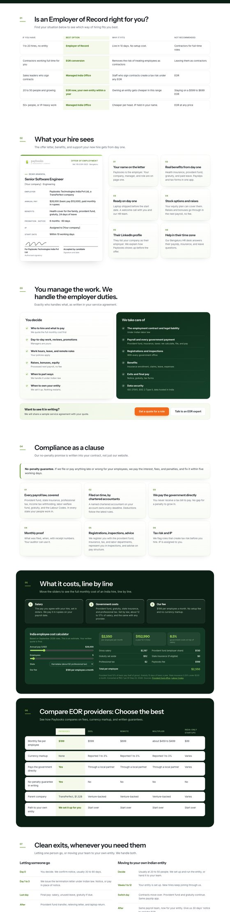
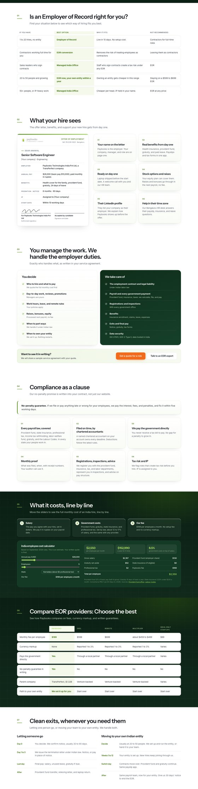
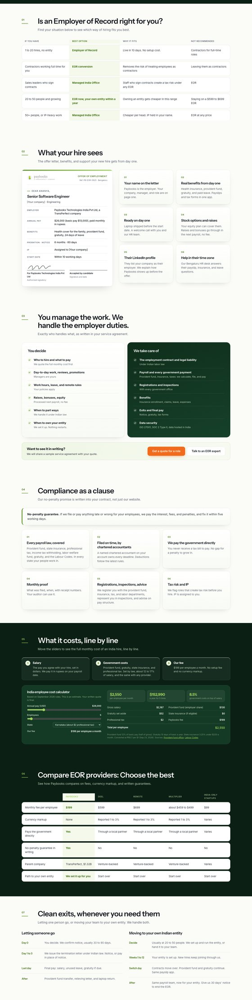
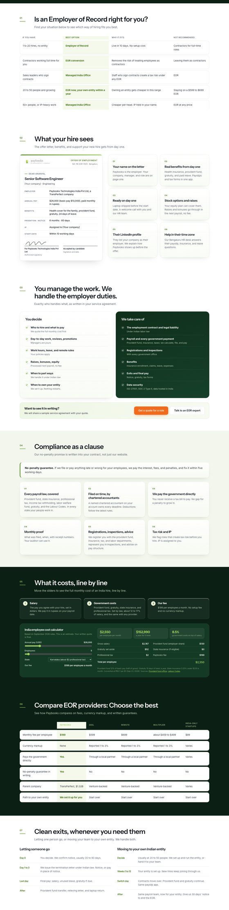
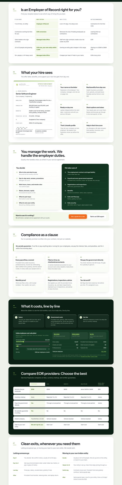

Five variations built on option C, which you picked, shown next to C itself. Each screenshot is the real page, chapters 01 to 07, with only the backgrounds changed.
White page. Cost and comparison go full-width dark like the banner.

Same idea as C, but the two dark chapters are rounded panels floating on the white page, not full-width bands.

C with the banner's green glow and faint grid carried into the dark chapters, so they feel like the banner returning.

A warm off-white page instead of pure white, with the two dark money chapters. Softer and more premium than C.

C, plus a single soft green band on the compliance chapter to flag the no-penalty promise. Three tones, used sparingly.

Every chapter is a white rounded panel on a soft sage page, and the two money panels are dark.
